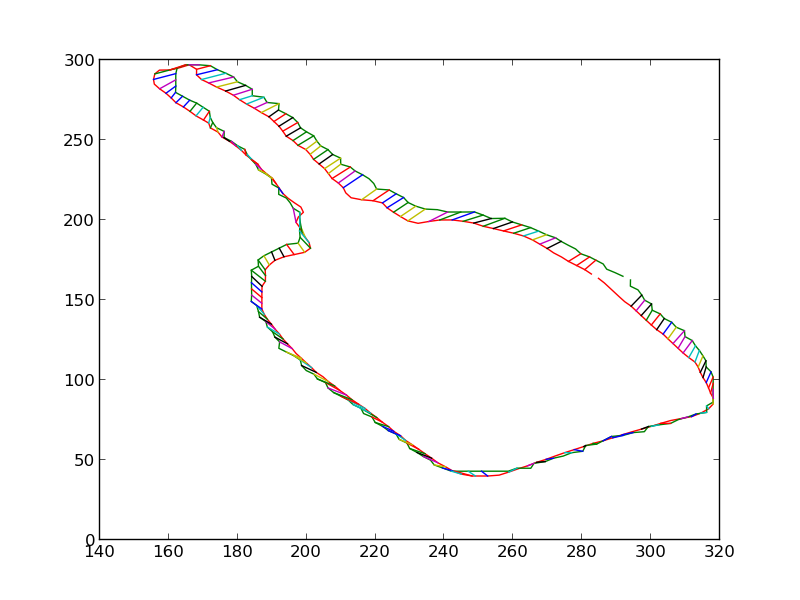
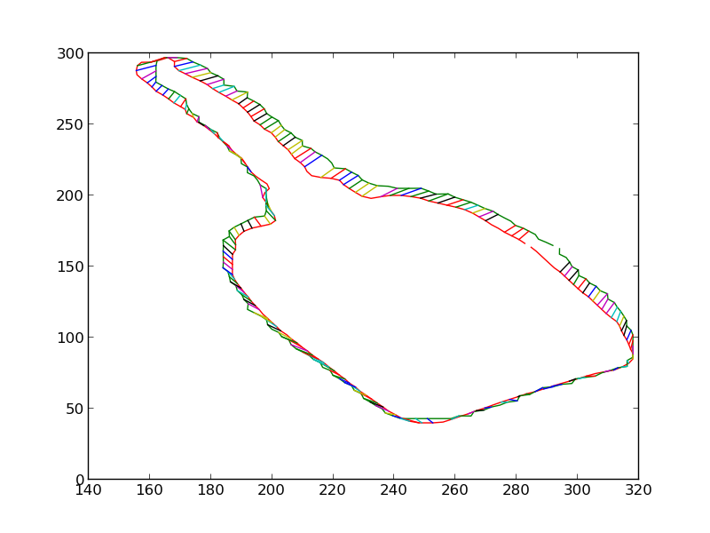

What?
In the summer of 2013 I joined a Computer Vision research project under Dr. Kostas Daniilidis at the GRASP laboratory, University of Pennsylvania. For this project I worked with CS PhD students Menglong Zhu, Cody Phillips, Mabel Zhang and Yinfei Yang. We also wrote a nice paper on the project, "Single Image 3D Object Detection and Pose Estimation for Grasping", which has been accepted for presentation at the IEEE International Conference on Robotics and Automation 2014.
In this project we argued successfully that the 2D shape of an object is a powerful piece of information and is enough to not only detect the object but also estimate its 6 degree-of-freedom pose in the 3D world with high accuracy. The figure above shows one such case, where the gastank has been detected and its 3D model has been projected on the image at the pose estimated by our system.
How?
Below, I describe the various stages of our system.
Detection
We use pre-computed 3D CAD models of the objects of interest to train Deformable Part Models of the silhouette of the objects. We have 16 such models, each with the object rendered at a different yaw pose. A Deformable Part Model, popularized by Pedro F. Felzenszwalb and his colleagues in their PAMI paper, is a technique to represent an object in terms of a 'root' and several parts. For example in the model of a face, the face on a higher scale might be the root whereas the eyes, nose, lips and ears at a lower scale might be parts. The root as well as parts are represented by their HOG features and the parts have a quadratic cost associated with the displacement of the parts with respect to the root. This way the model can account for minor inconsistencies in different instance of the same object. DPM based object detectors have been found to work quite well in practice. The figure below shows some object detection results, along with the models which match most closely with the detected object. A lower score is a better match.


Pose estimation
We then extract the silhouette of the detected object. This is done by first over-segmenting the image region in the detection bounding-box.

And then greedily merging the regions such that at each step the merged shape looks more and more like the 3D model's silhouette. Chordiogram features are used for shape comparison.


We then iteratively render the 3D model for the object in 3D world, each time estimating the change in pose which would make the silhouette of the rendered object match closer with the silhouette of the detected object. Some iteratons of this process are shown below. At the end of this process, the silhouettes match quite closely. The pose of the 3D model at this point is therefore the pose of the detected 3D object.


 

Projection and Gripping
We use ROS and the PR2 robot to validate our system. The estimated pose is used to project the 3D model in front of the PR2 in RViz. The open-source grasping tool graspit is used to calculate good grasping points around this model. The PR2 then extends its hand to the calculated grasping point and grasps the object. A screen-shot from RViz is shown below, in which ground truth is provided by the PR2's laser scanner and the 3D model in green is projected at the estimated pose.

A video of a grasp: